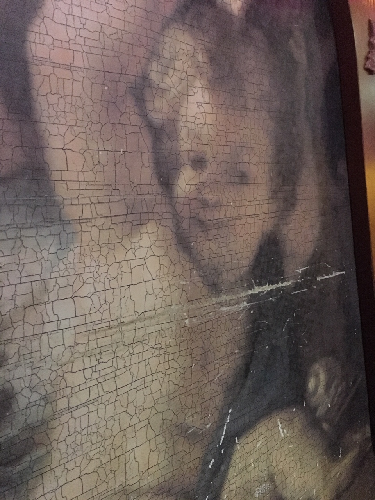

Cruise 2018
Prior to the cruise, we had a couple days of relaxation in Punta Gorda, FL. We rode bikes around the neighborhood and watched a couple movies from Redbox (both Ocean's 8 and Life of the Party were good ones). Unfortunately, Carmelo's new location is not yet open, but we had a lovely lunch at Harpoon Harry's and dinner at our favorite local crabhouse, Laishley's.
Once we checked into the cruise, we had lunch on the ship and settled into our room. Our ship was the Carnival Miracle, which is designed using elements of fantasy. The Bacchus dining hall was grape-themed. There were 3 pools with hot tubs, some covered chairs and hammocks, the Phantom theatre, the Raven library (Poe-themed), the Mad Hatter comedy club... you get the idea.
Best Pun Award for the trip goes to Laura. Our dining table was next to a "cherub with a chair rub."
Each day we were greeted by a new towel animal in our room.
Cozumel
In Cozumel, Mexico, we sailed on a catamaran and did some snorkeling. Our guide, Alejandro, was essentially a Hispanic version of Captain Jack Sparrow. We snorkeled in a couple different locations and saw some beautiful fish and coral and a sea turtle from our boat. Our favorite fish was a deep blue with speckled iridescent blue spots. We experienced some rain on the way back to shore and got a few jellyfish stings, but the rum punch and tequila shots kept us in good spirits, though Bradley felt some light motion sickness (Laura had taken Dramamine luckily). After our snorkeling adventure, we enjoyed hearing some street musicians while shopping a bit.
Belize
In Belize, our cruise ship had to anchor 5 miles from shore, and we had to take a tender boat about 20 minutes to shore. We were under the care of 3 very kind and knowledgeable tour guides (Eva, Elmer, and Lizianne). The bus ride in the city was rather hectic; there are only 10 traffic lights in the entire country, and only 5 of them work. After a 45-minute drive, we got on a river boat for about 20 minutes, then hiked through a jungle to explore the Mayan ruins at Lamanai.
We saw three excavated temples, and we got to climb on the big one (the High Temple). Laura went almost all the way up, and Bradley went to the very top.

It was easy to hear the howling monkeys in the area. We also saw some wild horses and iguanas. After the tour, we enjoyed some lunch. It was amusing to hear some American pop songs remixed in local music styles. On the way back to the ship, Bradley haggled with a vendor and got a small chess set for a good price.

Roatan (Honduras)
In Honduras, we explored Gumbalimba Park on the island of Roatan. Our tour guide, Ryan, was full of interesting information. We saw a cinnamon tree, a lime tree, and a cool display of bugs, hummingbirds, and butterflies. There were many lovely waterfalls and flowers in the park. We saw Roatan spiny-tailed black iguanas which are unique to the island. There were also local "rabbits" which are essentially large rodents. We learned about the history of pirates on the island and why they used eye patches (enhanced night vision!).


We crossed a wobbly bridge to an area with macaws (which mate for life) and other birds, including a peacock, which were very colorful.
The highlight of this excursion was the opportunity to play with white-headed capuchin monkeys. They jumped on Laura twice!
After monkeying around, we went to a beautiful beach, swam a bit, and shopped a bit.
Grand Cayman
Grand Cayman is a beautiful island. We also had to take a tender boat to shore, but the ride was very short. We rode on a bus and saw some iguanas and chickens hanging out on the way. We got on a mid-sized power boat to go snorkeling and play with stingrays. Three great people were in charge: a local named Tim, a guy from Canada, and a girl from Wales. We went about 25 miles off the Grand Cayman shore to "Stingray City", a gorgeous sandbar, 3-5 feet deep, where stingrays gather. There were stingrays of all sizes everywhere. Some were like affectionate cats and would rub against your legs. The trainers would get one and hold them close to the surface so we touch touch them. The water was almost otherworldly it was so beautiful.
Near the sandbar was a spectacular coral reef where we snorkeled. This was the best snorkeling we've done so far - many interesting coral features and beautifully colored fish.
After our excursion we had lunch at a local place right on the water called Rackams. We watched a school of tarpons while we ate. We would have shopped more in this area, but after we figured out the exchange rate was not in our favor, we decided we didn't need many souvenirs.
Aboard the Miracle
Throughout the course of the week, we saw 2 comedy shows and 1 music show, watched someone make an ice sculpture, toured an art gallery, avoided the smoky casino, visited the jewelry store (lucky Laura!), enjoyed time reading in the hammocks and the deck "huts", played mini golf on the top deck (Laura got a hole in one despite the crazy wind!), and enjoyed several musicians entertaining crowds around the boat: Travis the guitarist, a violin trio, and a steel drum player, to name a few.
The last night we had dinner at the fancy steakhouse on top floor. It had a huge skylight. The food was perfect. Our dessert was particularly unique. The chef came to our table and made an artistic, abstract sort of dessert right in front of us.
After dinner we went to a comedy show and had Sex on the Stage (it's a drink!), then went to Dr. Frankenstein's Club and did line dancing for about 4 songs. Can you believe that Bradley actually danced?! Laura was in shock and loved it!
We ate dinner at the Tampa airport. We sat at a large table across from a cool guy who turned out to be the president of the American Neurological Association. While we were sitting there, he had to take a call from "someone important." Turns out he had asked Robin Williams' widow to speak at the upcoming ANA conference in Atlanta, and she was calling him back to confirm details. He felt that her firsthand account of Robin's symptoms of Lewy body dementia would be a meaningful contribution to the neurological community. You never know who you'll run into in an airport.